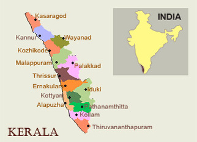

The Marvel of Kerala
Kerala, located on the south-western tip of India, enjoys unique geographical features that have made it one of the most sought-after tourist destinations in Asia.Fondly referred to as ‘God’s Own Country’,Kerala was selected by the National Geographic Traveller as one of the 50 destinations of a lifetime and one of the thirteen paradises in the world.An equable climate, serene beaches, tranquil stretches of backwaters,lush hill stations and exotic wildlife are the major attractions of this land.
A unique advantage of Kerala is that most of the destinations here are only a two-four hour drive from the other.Classical art forms, colourful festivals, exotic cuisine are some of the cultural marvels that await travellers.Ayurveda, the ancient Indian system of medicine and Panchakarma, the rejuvenation therapy in Ayurveda have also helped Kerala to gain a pan-global reputation as a worth-visit destination.Season never ends in Kerala,thanks to the year-long moderate climate and numerous festivals and events.
Geography
With the Arabian Sea in the west, the Western Ghats towering 500-2700 m in the east and networked by forty-four rivers, Kerala enjoys diverse geographical features. Kerala is divided into three geographical regions: Highlands, which slope down from the Western Ghats onto the Midlands of undulating hills and valleys into an unbroken coastline with many picturesque backwaters, interconnected with canals and rivers. The Western Ghats are nowhere more than 120 kms from the sea.
Seasons

Bestowed with a pleasant and equable climate throughout the year, Kerala is a tropical land with the coast running down its entire length and the Western Ghats forming a protective barrier against the dry winds from up north. The monsoons (June-September & October-November) and summer (February-May) are the seasons markedly experienced here, while winter is only a slight drop in temperature from the normal range of 28-32°C.
people

Kerala is one of India's most progressive states in terms of social welfare and quality of life. The State boasts of one of India's highest literacy rates, highest life expectancy and lowest child mortality rates. The literacy rate for women is one of the highest in all of Asia. Enjoying a unique cosmopolitan viewpoint, the people of Kerala, at all levels of society, have greater access to services and opportunities - as well as a greater say in their governance.